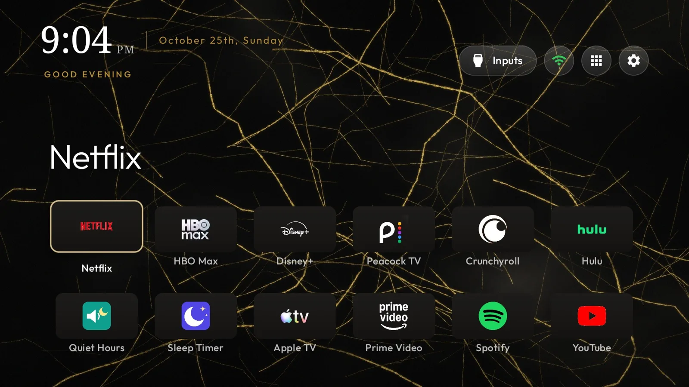
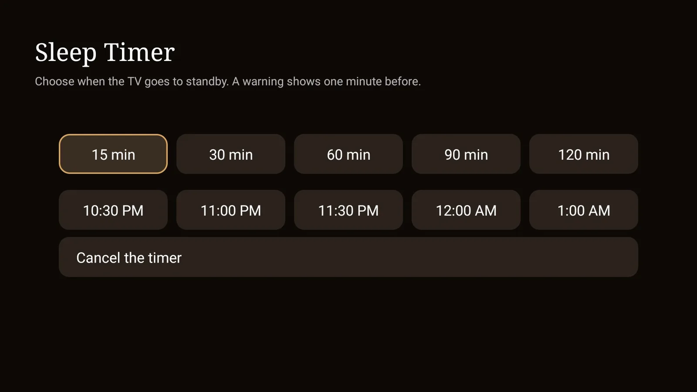

An AI agent stripped the ads off a Google TV and built it a new home screen
In one evening, Claude Code took a stock TCL Google TV from sponsored rows to a custom, ad-free home screen with skins and sleep features. Here is what changed, how to repeat it, and what it says about owning your software.

A stock Google TV opens on a page that is mostly advertising: sponsored rows, shows from services you do not pay for, the maker's own free channels, and in the background, software that watches what is on screen to sell ads against it. We pointed Claude Code at a 55-inch TCL Google TV and asked it to make that go away. It came back with a home screen built from scratch, six skins, two night-time add-ons and a write-up anyone can follow.
Nothing was rooted, flashed or cracked. Every change used switches Android already ships with, and every one of them can be undone.

What changed on the TV
- Google TV's home screen is off. Not hidden behind another launcher: disabled, so the Home button lands on the new screen every time.
- 22 built-in packages are disabled, including TCL's promo channels, a silent app installer and Samba TV's ACR service, the piece that fingerprints what is on screen for ad targeting.
- A new home screen, based on the open-source Clean Your TV launcher, patched to show each app's real logo on one tile colour, a gold accent, a serif clock and the date written out in full. The front row is ordered by actual watch time, read from the TV's own usage records.
- Skins. Each is a theme file plus a wallpaper drawn in Python. Describe a look and Claude writes the wallpaper code, renders it, checks a real screenshot from the TV and pushes it.
- Night features. A Sleep Timer that takes minutes or a clock time, Quiet Hours that cap the volume at 7 out of 100 from midnight to 7 AM, a nightly auto-off at 2 AM and a still-photo screensaver.
- AdGuard DNS for the whole TV, which blocks ad and tracker domains in the browser and most apps. It cannot touch YouTube's in-video ads, which come from the same servers as the videos.

The one hard part
Android always hands the Home button to a system app with a higher priority, whatever default you pick. On this TV two of them outrank any launcher you install: Google TV's own, and the setup wizard. Both had to be disabled.
The catch was TCL-specific. The saved Wi-Fi network belonged to the setup wizard, so the first attempt to disable the wizard wiped the network and dropped the TV offline. It was re-joined by hand from Settings, but that path runs through the wizard too, so the network still belonged to it. The fix was a small script that re-saves the network from the shell. The owner types the Wi-Fi password into it locally; it never touches a file, a log or the agent. After that, the Google apps came off cleanly.
That detail is the honest picture of agent work right now. The model did not know the trap in advance and walked into it once. What it did well was the recovery: read the TV's Wi-Fi state, work out who owned the network, explain it in plain terms, and propose a way around it that kept the password with the person. The trap and its fix are now in the guide, so nobody else has to find it the hard way.
Do it yourself
Everything is in the public TV Home kit: the launcher patch, a GitHub Actions workflow that builds the apps in the cloud (no Android Studio needed), the skins, the install and skin scripts, and a step-by-step guide that lists every problem we hit and its fix.
- Check the TV runs Google TV or Android TV, Android 9 or later. LG, Samsung and Roku sets cannot run it; on those, turn off home promotions in Settings and use an ad-blocking DNS on the router.
- Turn on developer options and USB debugging on the TV, and install Google's platform-tools on a computer on the same network.
- Make your own copy of the kit with Use this template, run the build, and follow the guide.
- Or hand the guide to an AI assistant. Section 14 has a prompt that tells it to work phase by phase, say what it will change and how to undo it before each step, and never handle your Wi-Fi password.
- Turn debugging off at the end. The launcher itself has no internet permission at all.
Plan on 30 to 90 minutes. A firmware update may switch disabled apps back on; re-running the scripts puts everything back.
Customising was never the hard part. Knowing how was.
None of this needed a jailbreak. Android TV has always allowed it, for anyone willing to learn adb, package names, intent priorities and Gradle signing configs. That knowledge barrier was the real lock, and a capable coding agent removes most of it. The person in the loop decides what the TV should be; the agent handles the archaeology.
That shifts the value of open source. Clean Your TV did the heavy lifting: tested package lists for dozens of models, safety guards that refuse to disable anything the TV needs to boot. An agent turned that general tool into one household's TV in an evening, and the result went back out as another open kit for the next person. When adapting code gets this cheap, a clean, documented, hackable base becomes more useful than a polished finished app, because everyone can make their own finished app from it.
There are two catches. Manufacturers may respond by locking developer options down further, which makes right-to-repair rules matter for software as much as for hardware. And small maintainers will see more forks and more questions without any more help, so credit and support the projects your agent leans on.
The lock on most consumer software was never the code. It was the time it took to learn it.
Sources
Written with AI for Bade's Mod Shop. Facts are checked against the sources above on the day of publishing; if one is wrong, open an issue.